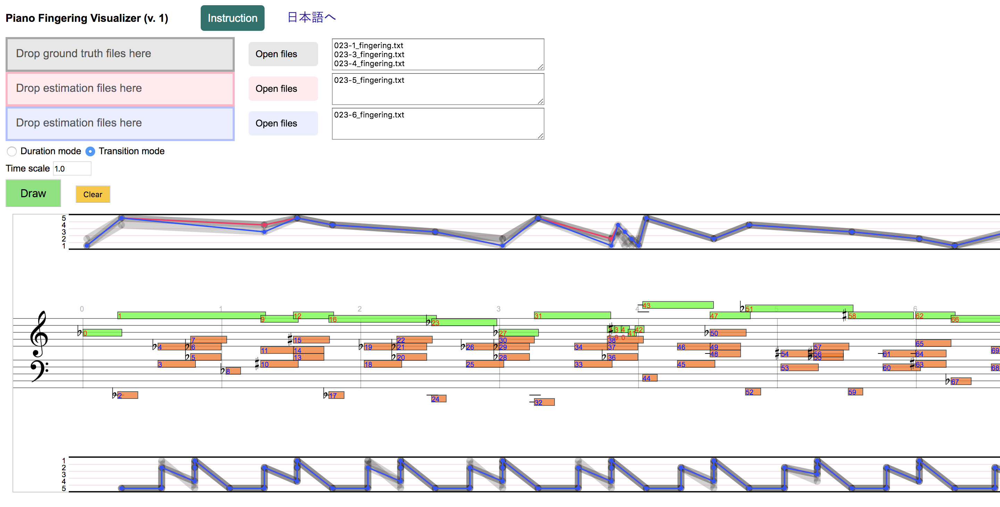

Eita Nakamura, Yasuyuki Saito, Kazuyoshi Yoshii
Statistical Learning and Estimation of Piano Fingering
Submitted to Information Sciences
Statistical Learning and Estimation of Piano Fingering
Submitted to Information Sciences
Estimation results by HMMs
1st-order HMM: Result_FHMM1.zip (115KB)2nd-order HMM: Result_FHMM2.zip (115KB)
3rd-order HMM: Result_FHMM3.zip (114KB)
Some examples
The following examples show fingerings estimated by the 2nd-order HMM for one piece by Bach, one by Mozart, and one by Chopin, with different degrees of polyphony. Please click on an image to see a high-resolution version.Training and test data
The HMMs are trained and tested using different subsets of PIG Dataset. To get access to the dataset and see details of the data format, please visit the PIG Dataset webpage.Visualizer

This visualizer can be used for observing and comparing the above estimation results as well as the fingerings in PIG Dataset. It works on browsers such as Google Chrome, Safari, Firefox, Microsoft Edge, etc.